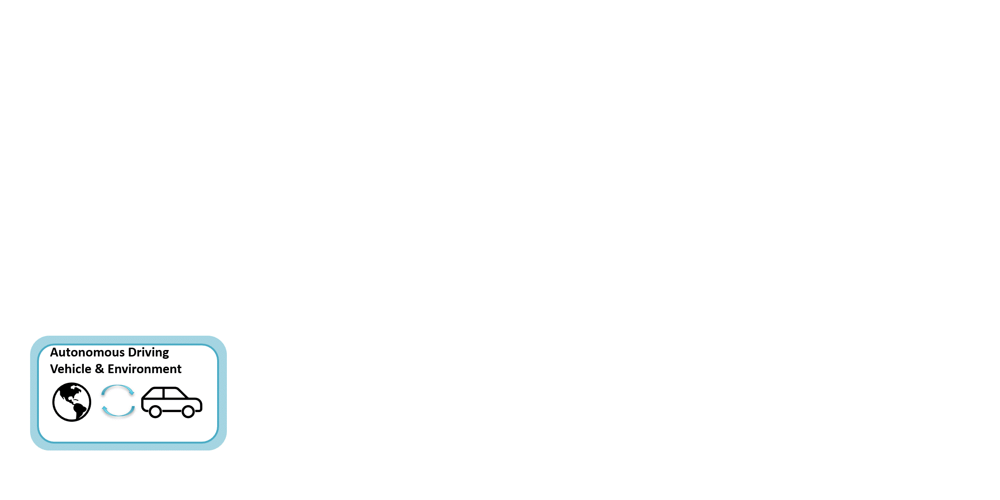
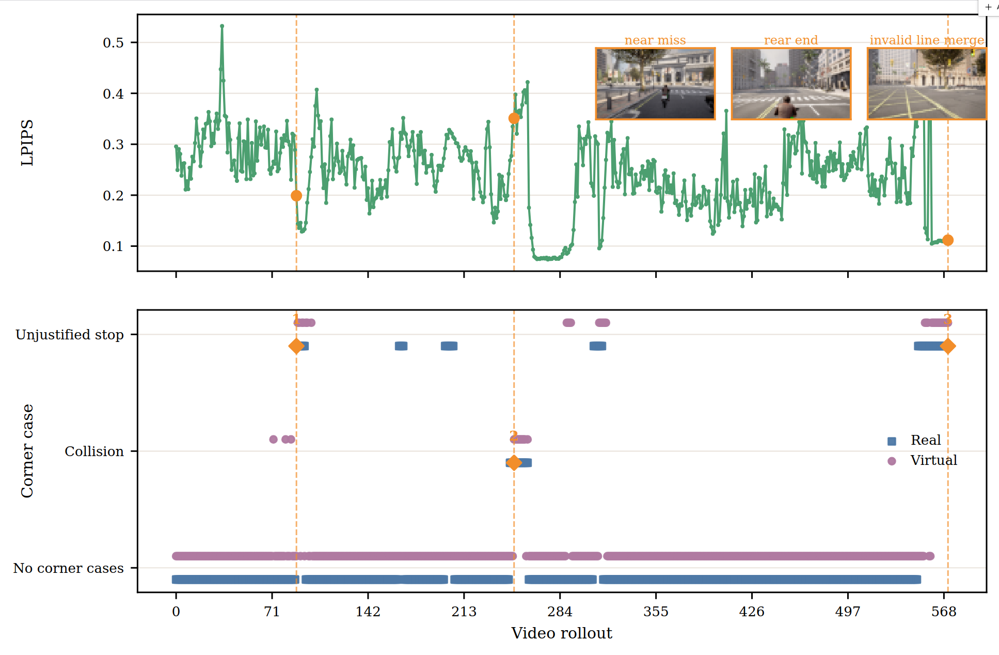
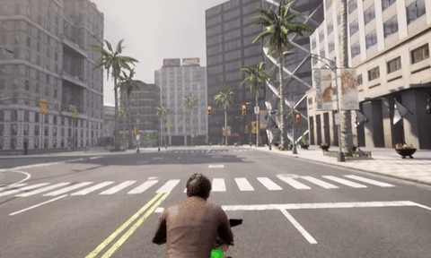

Abstract
Corner case detection and prediction are crucial for the safety and continuous development of autonomous driving (AD) systems. However, existing methods only focus on the internal states and cannot cope with complex scenarios. The emergence of world models in AD provides the possibilities to leverage real-world knowledge and reasoning. In this paper, we propose a framework to detect and predict imminent corner cases for AD systems using world models. We introduce the concept of AD system expert, i.e., world model finetuned to learn the driving behavior of the AD system. We demonstrate the feasibility of detecting and predicting corner cases, such as collision and unjustified stop, using a framework containing the AD system expert. We collect driving data using autonomous driving software Autoware with simulation software CARLA to finetune the Vista world model. The fine-tuning data and checkpoints are made available online. Our results show that the framework is able to predict the corner cases in AD with an overall precision of 0.8037 and a recall of 0.7227 for 576 video rollouts.
Framework

Corner case detection framework with world model
Results

Video Rollouts Fidelity and Detection Results with Three Corner Case Examples
Corner Cases
Real: unjustified stop due to false detected collision
Predicted: unjustified stop due to false detected collision

Real: collision via rear-ending
Predicted: collision via rear-ending
Real: unjustified stop due to invalid line-merging
Predicted: unjustified stop due to invalid line-merging
Ablation Study
Ablation over Conditioning Frames
| Num of cond. frames | Sensible (%) | Nonsensical (%) | Failure frame (μ ± σ) |
|---|---|---|---|
| 1 | 85.7 | 14.3 | 11.02 ± 6.04 |
| 2 | 86.7 | 13.3 | 11.55 ± 4.68 |
| 3 | 90.4 | 9.6 | 9.95 ± 4.64 |
| 4 | 86.1 | 13.9 | 10.11 ± 3.86 |
| 5 | 90.2 | 9.8 | 9.75 ± 4.63 |
Ablation over the number of conditioning frames. Sensible and nonsensical rates sum to 100%. Failure frame statistics are computed only over nonsensical videos.
High-Level Action Prediction
| Action type | Straight | Left | Right | Stop | Overall |
|---|---|---|---|---|---|
| Action-free (zero shot) | 0.794 | 0.698 | 0.444 | 0.624 | 0.640 |
| High-level command | 0.797 | 0.685 | 0.382 | 0.720 | 0.646 |
| Trajectory | 0.784 | 0.670 | 0.390 | 0.651 | 0.624 |
| Speed & steering angle | 0.811 | 0.692 | 0.345 | 0.707 | 0.639 |
Per-class F1 scores and macro-F1 for high-level action prediction across different action control modes.
TODO / Availability
- [ ] Publish code
- [ ] Publish dataset
- [ ] Publish finetuned checkpoints